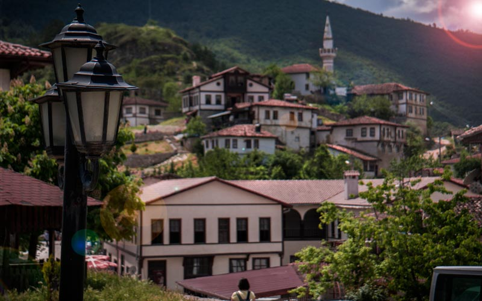

<!DOCTYPE html>

<html>
    <link rel="stylesheet" href="https://stackpath.bootstrapcdn.com/bootstrap/4.4.1/css/bootstrap.min.css" integrity="sha384-Vkoo8x4CGsO3+Hhxv8T/Q5PaXtkKtu6ug5TOeNV6gBiFeWPGFN9MuhOf23Q9Ifjh" crossorigin="anonymous">

    <script src="https://kit.fontawesome.com/d400023c88.js" crossorigin="anonymous"></script>
    
    <script src="https://code.jquery.com/jquery-3.4.1.slim.min.js" integrity="sha384-J6qa4849blE2+poT4WnyKhv5vZF5SrPo0iEjwBvKU7imGFAV0wwj1yYfoRSJoZ+n" crossorigin="anonymous"></script>
    <script src="https://cdn.jsdelivr.net/npm/popper.js@1.16.0/dist/umd/popper.min.js" integrity="sha384-Q6E9RHvbIyZFJoft+2mJbHaEWldlvI9IOYy5n3zV9zzTtmI3UksdQRVvoxMfooAo" crossorigin="anonymous"></script>
    <script src="https://stackpath.bootstrapcdn.com/bootstrap/4.4.1/js/bootstrap.min.js" integrity="sha384-wfSDF2E50Y2D1uUdj0O3uMBJnjuUD4Ih7YwaYd1iqfktj0Uod8GCExl3Og8ifwB6" crossorigin="anonymous"></script>


    <meta charset="UTF-8">
    <meta name="viewport" content="width=device-width, initial-scale=1">
    <title>Yusuf Sönmez</title>

    <link rel="stylesheet" href="CSS/stil.css">
    <link rel="stylesheet" href="CSS/proje_mirasimiz.css">
    <script src="https://kit.fontawesome.com/d400023c88.js" crossorigin="anonymous"></script>

</html>

<body>
    <div class="logo">
        <i class="fas fa-balance-scale"></i>
    </div>
    <header>  
        <div class="nav-bar">

            <nav class="navbar navbar-expand-lg navbar-light bg-light">
                <a class="navbar-brand" href="#">Sonmez</a>
                <button class="navbar-toggler" type="button" data-toggle="collapse" data-target="#navbarSupportedContent" aria-controls="navbarSupportedContent" aria-expanded="false" aria-label="Toggle navigation">
                  <span class="navbar-toggler-icon"></span>
                </button>
              
                <div class="collapse navbar-collapse" id="navbarSupportedContent">
                  <ul class="navbar-nav mr-auto">
                    <li class="nav-item">
                      <a class="nav-link" href="proje_hakkinda.html">Hakkımda <span class="sr-only">(current)</span></a>
                    </li>
                    <li class="nav-item">
                      <a class="nav-link" href="proje_ozgecmis.html">Özgeçmiş</a>
                    </li>
                    <li class="nav-item">
                        <a class="nav-link" href="proje_sehrim.html">Şehrim</a>
                      </li>
                      <li class="nav-item active">
                        <a class="nav-link" href="proje_mirasimiz.html">Mirasımız</a>
                      </li>
                      <li class="nav-item">
                        <a class="nav-link" href="proje_iletisim.html">İletişim</a>
                      </li>
                      <li class="nav-item">
                        <a class="nav-link" href="proje_login.html">Login</a>
                      </li>
                    
                  </ul>
                </div>
            </nav>

        </div>
        
    </header>
    <div class="container" >
        <div id="carouselExampleFade" class="carousel slide carousel-fade" data-ride="carousel">
            <div class="carousel-inner">
              <div class="carousel-item active">
                <a href="#beskopru"></a>
              </div>
              <div class="carousel-item">
                <a href="#orhancamii"></a>
              </div>
              <div class="carousel-item">
                <a href="#tarakli"></a>
              </div>
              <div class="carousel-item">
                <a href="#tatanga"></a>
              </div>
            <a class="carousel-control-prev" href="#carouselExampleFade" role="button" data-slide="prev">
              <span class="carousel-control-prev-icon" aria-hidden="true"></span>
              <span class="sr-only">Previous</span>
            </a>
            <a class="carousel-control-next" href="#carouselExampleFade" role="button" data-slide="next">
              <span class="carousel-control-next-icon" aria-hidden="true"></span>
              <span class="sr-only">Next</span>
            </a>
        </div>
        <script>
            $('.carousel').carousel({
                interval: 2000
                .carousel('pause')
    })
        </script>
    </div>
    <div class="tanitimlar">
        <div class="kutucuk_sol">

            <div class="metin" id="tatanga">
                <a href="https://tr.wikipedia.org/wiki/Sakaryaspor#Taraftar"><h2>Tatangalar</h2></a>
                <p>
                    Tatangalar, Sakaryasporun taraftar grubunun ismidir. Adeta Sakaryaspor ile özdeşleşmiştirler. 1990 yılında resmi bir hüviyet kazanan taraftar topluluğu 
                    Sakarya'nın en büyük sivil toplum örgütüdür. Maçlarda yaptıkları tezahürat ve sloganlarla taraftarlar camiasında tatangalar adından sıkça söz ettirmişlerdir.
                </p>
            </div>
        </div>
    
        <div class="kutucuk_sag">
    
            <div class="metin" id="tarakli">
              <a href="http://www.tarakli.bel.tr/tarihce.asp"><h2>Taraklı</h2></a>
                <p>
                  Taraklı, Sakarya'nın en önemli kültürel miraslarından sayılabilir. Kasabanın, tepelerin yamaçlarına kurulmuş eski Osmanlı tipi binalarla kaplı olması
                ve şehirden ya da şehrin dışından bir çok turistin burayı ziyaret ediyor olması günden güne Taraklı'yı Türk turizm seyahat noktalarının biri haline getirmiştir.
                </p> 
            </div>
    
        </div>
        <div class="kutucuk_sol">

            <div class="metin" id="orhancamii">
                <a href="https://tr.wikipedia.org/wiki/Orhan_Cami_(Adapazar%C4%B1)"><h2>Orhan Camii</h2></a>
                <p>
                  Orhan Camii, şehrin tam ortasında tarihi bir eser niteliğini taşımaktadır. Camii, adından da anlaşılacağı gibi Orhan Gazi zamanında Bizans topraklarında 
                  hakimiyet kurmak adına yerleştirilen Türk obalarının biri tarafından yapılmıştır. Şehrin merkezinde yer alışı, şehrin tarihi dokuyla nasıl bir iç içelik sergilediğini
                  de ayrıca bize vurguluyor.
                </p>
            </div>
    
        </div>
        <div class="kutucuk_sag">

            <div class="metin" id="beskopru">
              <a href="https://tr.wikipedia.org/wiki/Justinianus_K%C3%B6pr%C3%BCs%C3%BC"><h2>Justinianus Köprüsü</h2></a>
              <p>
                Bizans İmparatoru Justinianus (527-565) tarafından MS 558-560 yıllarında yaptırılan bu taş köprü, 365 metre uzunluğunda, 9,85 metre genişliğinde olup toplam 12 kemerlidir.
                Şehrin içinde Orhan Camii gibi Osmanlı'dan kalma eserler olduğu gibi Osmanlı'lardan önceki döneme yani Bizans'a ait tarihi eserler de mevcuttur. Farklı kültürel
                ve toplulukları bünyesinde barındıran Sakarya, bırakılan tarihi eserlere de ev sahipliği yapıyor.
              </p>
            </div>
    
        </div>
    </div>
    

    <footer>
        <table>
            <tr>
                <td class="Policies">
                    Tüm Hakları Saklıdır
                </td>
                <td class="social_media">
                    <ul>
                        <li><a href="mailto:yusufsn54@gmail.com"><i class="fas fa-envelope"></i></a></li>
                        <li><a href="https://www.instagram.com/yusuf_gb/"><i class="fab fa-instagram"></i></a></li>
                        <li><a href="https://www.linkedin.com/in/yusuf-s%C3%B6nmez-5025911a4/"><li><i class="fab fa-linkedin"></i></li></a></li>
                    </ul>
                </td>
                <td class="Inf">
                    Made By Sonmez
                </td>
            </tr>
        </table>
    </footer>
</body>